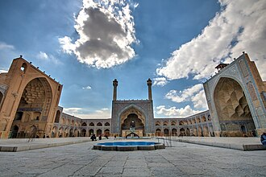

PrésentationتقديمOverview
La Grande Mosquée d'Ispahan, dite aussi mosquée du vendredi ou vieille mosquée, par opposition à la mosquée du Shah, est une mosquée édifiée à partir du Xe siècle dans la ville d'Ispahan. Très remaniée au cours du temps et en particulier sous les Safavides, elle est reliée à la nouvelle ville via le Grand Bazar.
مسجد أصفهان الجامع أو المسجد العتيق بأصفهان وهو من أقدم مساجد إيران القائمة، ويعود إنشاؤه إلى عام 771م يقع في مدينة أصفهان في محافظة أصفهان، إيران. وقد أحترق المسجد أواخر القرن الحادي عشر. والمسجد الحالي نتاج عملية مستمرة من البناء وإعادة البناء والترميم منذ إنشائه نهاية القرن الثامن الميلادي واخر ترميم للمسجد جرى نهاية القرن العشرين. يتألف بناء المسجد من أربع إيوانات معقودة بالطابوق المقرنص وله أربع أبواب متقابلة. يقع بازار أصفهان الكبير عند الطرف الجنوب الشرقي للمسجد، ومسجد جمعة أصفهان مدرج على لائحة اليونسكو للتراث العالمي منذ عام 2012.
The Jāmeh Mosque of Isfahān or Jāme' Mosque of Isfahān, also known as the Atiq Mosque and the Friday Mosque of Isfahān, is a historic congregational mosque (Jāmeh), located in Isfahan, Iran. The mosque is the result of continual construction, reconstruction, additions and renovations on the site from c. 771 CE to the end of the 20th century. The Grand Bazaar of Isfahan can be found towards the southwest wing of the mosque. It has been a UNESCO World Heritage Site since 2012. It is one of the largest and most important monuments of Islamic architecture in Iran.
İsfahan Ulu Camii ya da İsfahan Cuma Camisi, İran'ın İsfahan Eyaleti'ndeki yer alan cuma camisidir. Cami, 771 yılından 20. yüzyılın sonlarına kadar devam eden inşaat, yeniden yapılanma, ilaveler ve yenilemelerin sonucunda bugünkü halini almıştır. İsfahan Kapalıçarşısı, caminin güneybatı kanadında yer almaktadır. 2012 yılında UNESCO tarafından bir Dünya Mirası olarak ilan edilmiştir.
Masjid Jami Isfahān adalah masjid agung, jemaah (Jami) di Kota Isfahan, dalam Provinsi Isfahan, Iran. Masjid ini merupakan hasil konstruksi, rekonstruksi, penambahan, dan renovasi terus-menerus di lokasi tersebut dari sekitar 771 sampai akhir abad ke-20. Bazar Raya Isfahan dapat ditemukan pada sayap barat daya masjid. Masjid ini menjadi Situs Warisan Dunia UNESCO sejak 2012.
Die Freitagsmoschee von Isfahan, auch Jame-Moschee von Isfahan genannt, ist eine historische Moschee in Isfahan. Die Moschee wird als Museum der 1300-jährigen Entwicklung iranischer Architektur bezeichnet. Aufgrund von Ausgrabungen wurde deutlich, dass die Moschee auf älteren Bauten der früheren vorislamischen Zeit erbaut worden ist. Nach der Entdeckung der Fundamente eines sassanidischen Feuertempels wird angenommen, dass die Moschee auf einem sassanidischen Feuertempel erbaut wurde.
La Mezquita Aljama de Isfahán es la mezquita aljama de la ciudad de Isfahán, capital de la provincia de Isfahán, en Irán. La mezquita es el resultado de la construcción continua, reconstrucción, adiciones y renovaciones en el sitio desde alrededor de 771 hasta finales del siglo XX. El Gran Bazar de Isfahán se encuentra hacia el lado sudoeste de la mezquita. En 2012, fue incluida en la lista del Patrimonio de la Humanidad de la Unesco, que destacaba:
La Moschea del Venerdì di Isfahan è probabilmente l'espressione architettonica più importante della dominazione selgiuchide in Persia (1038-1118) e delle successive aggiunte nei secoli successivi. Dal 2012 è divenuta anche un Bene protetto dall'UNESCO.
A Grande Mesquita de Isfahan, de Ispaã(pt-BR) ou de Ispaão(pt-PT?) é a maior mesquita congregacional (jameh) da cidade de Isfahan, na homônima do Irã. A mesquita é o resultado de uma construção contínua com reconstruções, adições e renovações que duraram desde 771 até o final do século XX. O Grande Bazar de Isfahan encontra-se a sudeste da mesquita.
De Vrijdagmoskee van Isfahan of de Masjed-e Jāmé is een moskee in Isfahan, Iran. Het oudste deel van de moskee dateert uit het eind van de achtste eeuw. De moskee is in de loop der eeuwen herhaaldelijk uitgebreid. De moskee was tot 1630 de belangrijkste moskee van Isfahan. In 2012 werd de moskee door UNESCO toegevoegd aan de werelderfgoedlijst.
伊斯法罕聚礼清真寺 是伊朗伊斯法罕的大型清真寺，兴建和修复从771年直到20世纪末。2012年列为世界遗产。其西南侧毗邻伊斯法罕大巴扎。
エスファハーンのジャーメ・モスク は、イランのエスファハーンにあるジャーメ・モスク。771年頃に建築されたエスファハーンでもっとも古いモスクであり、絶え間無く建築活動が行われた結果、建物のどの部分がどの時代に建てられたのかすら特定が困難な複雑な歴史を持つ。イランにおけるモスク建築史を体現している建築物とも言え、イスラム建築研究者の石井昭は「建築様式の博物館である」と評している。イタリア中東研究所（IsMEO）が1970年代に発表した研究報告書を元に独自調査を行ったイスラーム美術史・文化史研究者のグラバールは、エスファハーンのジャーメ・モスクは少なくともブワイフ朝時代、セルジューク朝時代、イルハン朝時代、ティムール朝時代、サファヴィー朝時代、アフシャール朝時代以降の6つの時期に区分し、分類できるとしている。ユネスコの世界遺産に登録されている。
이스파한 자메 모스크(페르시아어: مسجد جامع اصفهان 마스지데 자메 이스파한)는 이란 이스파한주 이스파한에 위치한 거대한 회중 모스크이다. 771년경부터 20세기 말까지 해당 부지에 대한 지속적인 건설, 재건, 증축, 개축이 진행되었다. 모스크의 남서쪽 날개 부분에는 이스파한 그랜드 바자르가 위치한다. 2012년에는 유네스코 세계유산으로 등록되었다.
Мечеть Джами или Пятничная мечеть в Исфахане — крупнейшая общественная мечеть в городе Исфахан, Иран. Мечеть является результатом длительного строительства: она была заложена около 771 года н. э., но реконструировалась и достраивалась до конца XX века. К востоку от мечети находится Большой рынок Исфахана. С 2012 года мечеть Джами внесена в список объектов Всемирного наследия ЮНЕСКО.
Thánh đường Masjed-e Jāmé hay Nhà thờ Hồi giáo giáo Isfahan là một Nhà thờ Hồi giáo của giáo đoàn (Jāmeh) thành phố Isfahān, tỉnh tỉnh Isfahān, Iran. Thánh đường Hồi giáo này là kết quả của quá trình xây dựng liên tục, tái xây dựng, bổ sung và cải tạo từ khoảng năm 771 đến cuối thế kỷ 20, được xem như một bảo tàng của sự phát triển kiến trúc Iran trong vòng 1300 năm. Chợ Lớn của Isfahan ở cánh phía tây nam của nhà thờ Hồi giáo. Thánh đường đã được UNESCO công nhận là di sản thế giới từ năm 2012.
Fredagsmoskén i Esfahan är den stora moskén i staden Esfahan i provinsen Esfahan i Iran. Moskén är resultatet av ett ständigt pågående byggande genom renoveringar, till- och ombyggnader från omkring 771 till slutet av 1900-talet. Qeysariebasaren ligger i riktning mot moskén sydvästra flygel. Moskén är sedan 22 maj 1997 uppsatt på Irans tentativa världsarvslista.
Moscheea Jameh sau Masjid-e Jameh este o moschee din orașul Isfahan, Iran. Este cea mai veche moschee din oraș și una dintre primele moschei construite în Iran.
Sur la carteعلى الخريطةOn the map
Documents et liensوثائق وروابطDocuments and links
- Wikipédia — Français
- Wikipédia — العربية
- Wikipédia — English
- Wikipédia — Türkçe
- Wikipédia — Bahasa Indonesia
- Wikipédia — اردو
- Wikipédia — Deutsch
- Wikipédia — Español
- Wikipédia — Italiano
- Wikipédia — Português
- Wikipédia — Nederlands
- Wikipédia — 中文
- Wikipédia — 日本語
- Wikipédia — 한국어
- Wikipédia — Русский
- Wikipédia — Tiếng Việt
- Wikipédia — Svenska
- Wikipédia — Română
- Wikidata — Q1256501
Données : Wikidata (CC0), mises à jour tous les 3 mois. L'année est la plus ancienne date de construction connue du bâtiment : pour un édifice devenu mosquée plus tard (comme Sainte-Sophie), c'est celle du bâtiment d'origine. Photos : Wikimedia Commons, auteur et licence sur la page de chaque photo.البيانات: ويكي بيانات (CC0)، تُحدَّث كل 3 أشهر. السنة هي أقدم تاريخ معروف لبناء المبنى: فإن صار مسجدًا لاحقًا (مثل آيا صوفيا) فهي سنة المبنى الأصلي. الصور: ويكيميديا كومنز، المؤلف والرخصة في صفحة كل صورة.Data: Wikidata (CC0), updated every 3 months. The year is the earliest known construction date of the building: for a building that became a mosque later (such as Hagia Sophia), it is that of the original building. Photos: Wikimedia Commons, author and licence on each photo's page.
Grandes mosquées du mondeالجوامع الكبرى في العالمGreat mosques of the world →